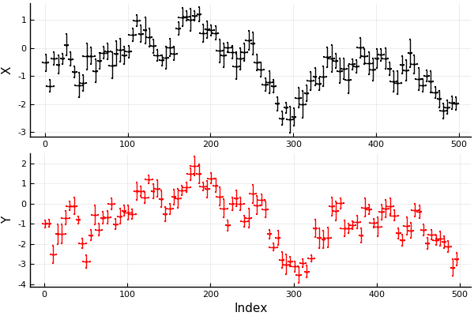
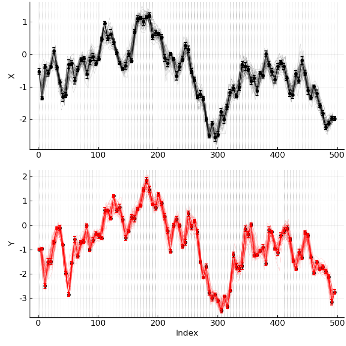
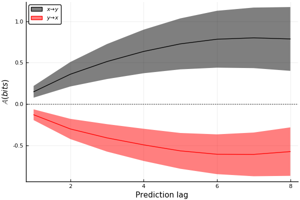

UncertainData.jl provides tools to systematically deal with uncertain data, and to sample from uncertain datasets more rigorously. It makes workflows involving uncertain data of different types and from different sources significantly easier. It was originally designed to form the backbone of the uncertainty handling in CausalityTools.jl.
For more information, see the documentation.
If you use UncertainData.jl for any of your projects or scientific publications, please cite this Journal of Open Source Software (JOSS) publication.
An example
Here’s an example illustrating how the functionality of the UncertainData.jl package is integrated with the CausalityTools.jl package. The jupyter notebook was run with a Julia 1.2 kernel. (Note: Pending a 1.0 release of CausalityTools.jl, there may be breaking changes).
using UncertainData, CausalityTools, Distributions, StatsBase,
Test, Interpolations, Measures, LaTeXStrings
using Plots; pyplot();
Time series with uncertainty
Let’s consider a case of two unidirectionally coupled first-order autoregressive (AR1) processes. We record N points from the built-in ar1_unidir system, collect the 1st and 2nd
variables as X and Y and add some uncertainties to both the indices and the values.
N = 100
sys = ar1_unidir(c_xy = 0.8)
X, Y = example_uncertain_indexvalue_datasets(sys, N, (1, 2), tstep = 5,
d_xval = Uniform(0.1, 0.3), d_yval = Uniform(0.1, 0.3),
d_xind = Uniform(1, 3), d_yind = Uniform(1, 3)
);
qs = [0.05, 0.95] #quantiles
px = plot(X, ylabel = "X", marker = stroke(0.01, :black), ms = 1, c = :black, qs, qs)
py = plot(Y, xlabel = "Index", ylabel = "Y", marker = stroke(0.01, :red), ms = 1, c = :red, qs, qs)
plot(px, py, layout = grid(2, 1), legend = false)

Create a fine-grained interpolation grid over the range of the data.
tmin = max(minimum(mean.(X.indices)), minimum(mean.(Y.indices)))
tmax = max(maximum(mean.(X.indices)), maximum(mean.(Y.indices)))
intp_grid = tmin:0.01:tmax
1.0:0.01:496.0
Decide on a coarser resolution at which we want to analyse the data. Pick all the linearly interpolated data that falls in each bin and summarise it using the mean function.
binstep = 5
left_bin_edges = tmin:binstep:tmax
r = InterpolateAndBin(mean, left_bin_edges, Linear(), intp_grid, Flat(OnGrid()))
InterpolateAndBin{Linear}(Statistics.mean, 1.0:5.0:496.0, Linear(), 1.0:0.01:496.0, Flat(OnGrid()))
Draw some interpolated-and-binned realisations and plot them:
g = left_bin_edges[1:end-1] .+ step(left_bin_edges)/2
#pX = plot(legend = false)
pX = plot(mean.(X.indices), mean.(X.values), label = "X", c = :black)
plot!(X, ylabel = "X", marker = stroke(0.01), c = :black)
vline!(left_bin_edges, c = :black, alpha = 0.5, lw = 0.5, ls = :dot)
for i = 1:50
plot!(g, resample(X, r), label = "", alpha = 0.3, lw = 0.3, c = :black)
end
#pY = plot(legend = false)
pY = plot(mean.(Y.indices), mean.(Y.values), label = "Y", c = :red)
plot!(Y, xlabel = "Index", ylabel = "Y", marker = stroke(0.01), c = :red)
vline!(left_bin_edges, c = :black, alpha = 0.5, lw = 0.5, ls = :dot)
for i = 1:50
plot!(g, resample(Y, r), label = "", alpha = 0.3, lw = 0.3, c = :red)
end
plot(pX, pY, layout = grid(2, 1), legend = false, size = (700, 700),
bottom_margin = 5mm, left_margin = 5mm, tickfont = font(12),
guidefont = font(12))

Okay, that looks reasonable! Let’s apply a causality test.
Defining an InterpolateBinTest
We’ll use a predictive asymmetry test as the causality test. Then we just couple that test with the interpolation-and-binning scheme, and compute the causality between X and Y over 100 independent realisations.
# Causality test
k, l, m = 1, 1, 1 # embedding parameters
n_subdivisions = floor(Int, N^(1/(k + l + m + 1)))
state_space_binning = RectangularBinning(n_subdivisions)
ηs = -8:8
te_test = VisitationFrequencyTest(k = k, l = l, m = m,
binning = state_space_binning,
ηs = ηs, b = 2) # use base-2 logarithms
pa_test = PredictiveAsymmetryTest(predictive_test = te_test)
# Define interpolate-and-bin test. Draw 100 independent realisations.
ib_test = InterpolateBinTest(pa_test, r, 100)
InterpolateBinTest{PredictiveAsymmetryTest{VisitationFrequencyTest}, InterpolateAndBin{Linear}}(PredictiveAsymmetryTest{VisitationFrequencyTest}(predictive_test = VisitationFrequencyTest(k = 1, l = 1, m = 1, n = 1, τ = 1, b = 2, binning_summary_statistic = mean, estimator = VisitationFrequency(), binning = RectangularBinning(3), ηs = -8:8)), InterpolateAndBin{Linear}(Statistics.mean, 1.0:5.0:496.0, Linear(), 1.0:0.01:496.0, Flat(OnGrid())), 100)
Compute causality statistic
res_xy = causality(X, Y, ib_test);
res_yx = causality(Y, X, ib_test);
Summarise and get the mean and standard deviation for each prediction lag $\eta$. Plot it.
RES_xy = hcat(res_xy...)
RES_yx = hcat(res_yx...)
plot(xlabel = "Prediction lag", ylabel = L"\mathbb{A} (bits)", legend = :topleft)
plot!(1:maximum(ηs), mean(RES_xy, dims = 2), ribbon = std(RES_xy, dims = 2),
label = L"x \to y", c = :black)
plot!(1:maximum(ηs), mean(RES_yx, dims = 2), ribbon = std(RES_yx, dims = 2),
label = L"y \to x", c = :red)
hline!([0], lw = 1, ls = :dot, c = :black, label = "")

We find that the predictive asymmetry in the causal direction ($\mathbb{A}_{x \to y}$) is positive, whereas the asymmetry in the non-causal direction ($\mathbb{A}_{y \to x}$) is negative. We thus recover the expected unidirectional causal relationship $X \to Y$. Note that because we defined our time series as UncertainIndexValueDataset, the causality() test function returns a distribution of predictive asymmetry values for each prediction lag.